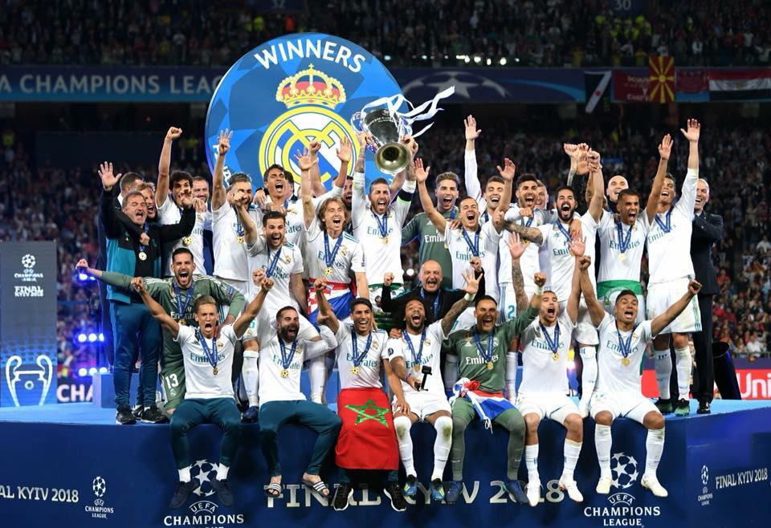
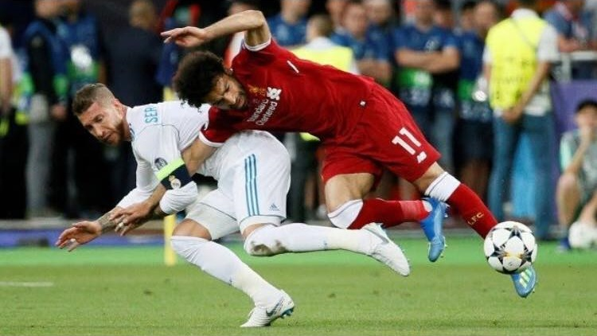
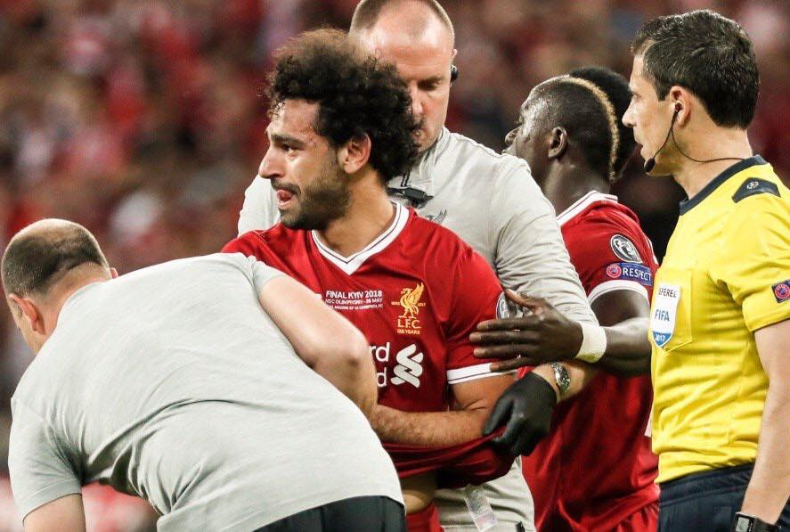
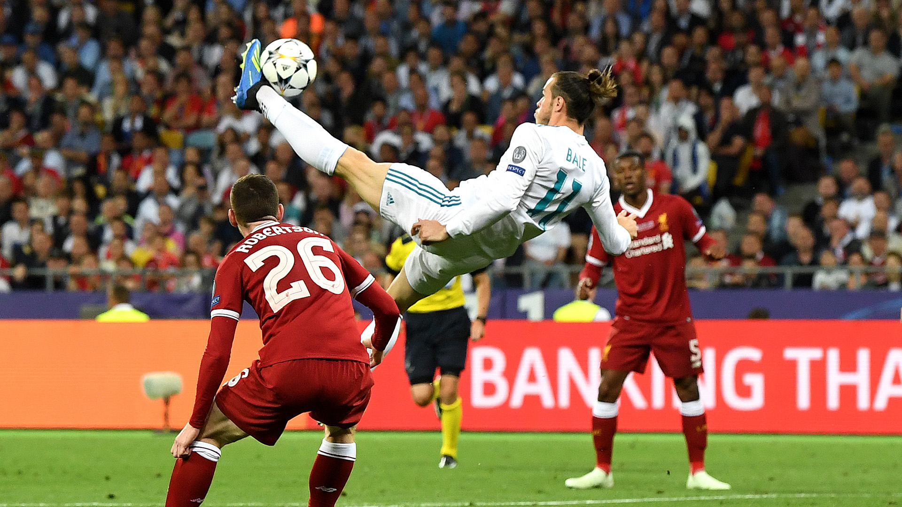
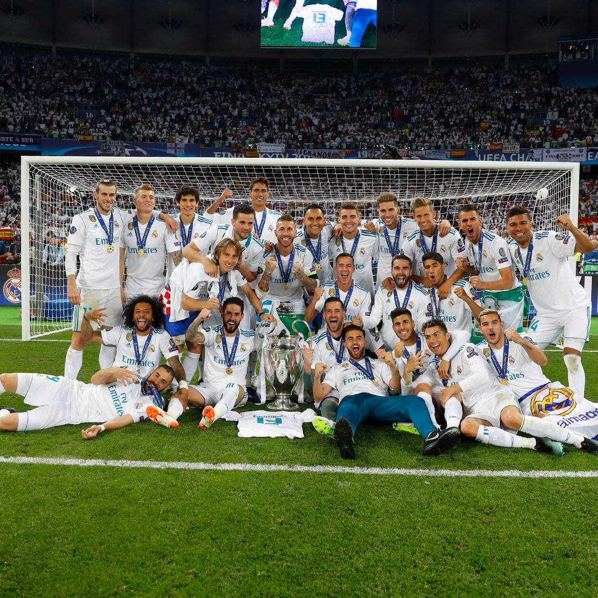

The APorLa13 of Real Madrid <3
Tiếng còi đã vang lên đội bóng mình yêu thích đã nâng cúp. Một trận đấu tuyệt vời, một mùa C1 tuyệt vời nữa đã kết thúc, đội bóng mình thích đã lên ngôi... một lần nữa :). Three cups in a row, that so amazing! The CHAMP13NS of Real Madrid becomes true. Kết thúc một trận chung kết dẫu không kịch tính bằng những trận tứ kết, bán kết nhưng the final match để lại trong tôi rất rất nhiều cảm xúc.
 Real Madrid vô địch Champion League 2018.
Mohamez Salah chấn thương sau va chạm với Ramos khi trận đấu mới bắt đầu được chưa lâu. Là một Fan Real lâu năm nhưng mình không phủ nhận tình huống tiểu xảo của R4 khiến Salah chấn thương, tuy nhiên bóng đá là thế, chấp nhận và đi tiếp. Nước mắt của Salah - nước mắt của hoàng tử Ai Cập khiến những cổ động viên Quỷ đỏ vùng Merseyside hoang mang tột độ bởi niềm hi vọng của họ đã bị dập tắt. Salah rời sân trong nước mắt khiến tôi nhớ đến hình ảnh Cristiano Ronaldo rời sân trong trận chung kết EURO 2016, họ đều đã cố gắng, họ xứng đáng nhận được chiến thắng. Cá nhân tôi hi vọng rằng những chấn thương của Salah, của cả Carvajal sẽ kịp bình phục để chuẩn bị cho World Cup 2018 sắp tới tại Nga. Hi vọng rằng những sai làm của thủ môn Loris Karius sẽ được tha thứ, hi vọng những cổ động viên Liver sẽ không trách anh, "YOU'LL NERVER WALK ALONE" đó chính là sologan của Liverpool. Loris Karius đã chơi cả một mùa giải xuất sắc, chỉ là sai lầm mà con người thì ai không mắc phải sai lầm, mong rằng The Pool sẽ tiếp tục ủng hộ anh. Một lần nữa KLop lại thua một trận chung kết, chúc ông may mắn lần sau. Chúc Liverpool sẽ thành công vào mùa giải năm sau.
 Mohamed Salah va chạm với Sergio Ramos và sớm rời sân.
 Mohamed Salah rời sân trong sự tiếc nuối của CĐV.
Còn bây giờ xin chúc mừng nhà vô địch Real Madrid, chúc mừng HLV Zinédine Zidane, chúc mừng các Madridista. Đội bóng hoàng gia Tây Ban Nha đã chính thức bảo vệ thành công chức vô địch Châu Âu UEFA Champion League đồng thời xác lập một kỉ lục vô tiền khoáng hậu với 3 chiếc cúp vô địch trong 3 mùa giải liên tiếp. Một lần nữa những sự thay đổi của HLV Zidane lại phát huy tác dụng, một lần nữa ông ăn mừng siêu phẩm của học trò - lần này là Gareth Bale. Anh Beo đã làm nên điều kì diệu tại Kiez sáng nay, một pha xe đạp chổng ngược sau quả tạt từ cánh trái của M12. Tôi thật sự há hốc mồm với cú xe đạp chổng ngược của lão này. What a goal!!! Quá tuyệt vời, không kém gì siêu phẩm của Cr7 vào lưới Buffon ở bán kết, cả hai bàn đều cùng một style, một vào góc trái, một góc phải, cả hai đều đẹp và một lần nữa Zizou lại có cơ hội ăn mừng kiểu "what the f*** man", có lẽ ông đang lo lắng 2 bàn thắng của 2 cậu học trò sẽ cuỗm mất danh hiệu bàn thắng đẹp nhất C1 của ông hay sao ý :p.
 Gareth Bale lập siêu phẩm xe đạp chổng ngược.
Là một Madridista hiện tại Tôi không biết phải viết gì nữa, đêm nay và cả ngày mai tôi sẽ chẳng làm gì ngoài việc lướt newsfeed và lân la các trang báo nghe họ ca tụng đội bóng của mình. À và quên nữa là còn phải đi chọc mấy thằng bạn Fan Bà xã nữa khổ ghê :D. Một lần nữa xin chúc mừng và cảm ơn các anh, trận chung kết này chưa hẳn là trận tuyệt nhất, cảm ơn các anh vì cả chặn đường đi đến trận chung kết này, hạ nhà vô địch Pháp, Ý, Đức để lên đỉnh Châu Âu thì còn gì mà không xứng đáng nữa chứ. Dẫu nhiều giây phút làm các fan hú hồn nhưng các anh đã chiến thắng bằng bản lĩnh của mình, bản lĩnh của đội bóng Hoàng gia Tây Ban Nha.
 Hala Madrid.
Một lần nữa xin cảm ơn tất cả vì một mùa C1 trọn vẹn, chúc cả squad sẽ tiếp tục chiến đấu tốt tại World Cup sắp tới. Chúc anh Rô ôm luôn quả bóng vàng năm nay. Chúc anh Mốt không bị sập Instagram và mong anh mướn ngay đội vệ sĩ kẽo nhà anh bị xịt sơn đỏ :).
#APorLa13
#HalaMadrid
#Peace!